Benchmark
Zuguang Gu ( guzuguang@suat-sz.edu.cn )
2026-07-08
Source:vignettes/benchmark.Rmd
benchmark.RmdPrepare
The function unique_strings() generates a vector of
unique strings. It simply uses digest package to
generate MD5 hashes of R objects.
library(hashtable)
library(microbenchmark)
library(digest)
unique_strings = function(k) {
sapply(seq_len(k), digest)
}
unique_strings(2)## [1] "4b5630ee914e848e8d07221556b0a2fb" "c01f179e4b57ab8bd9de309e6d576c48"bm() is only for simplifying code demo in this
document.
bm = function(...) {
mean(microbenchmark(..., times = 25)$time)
}There are the following packages implementing hash tables:
- hash, using environment,
-
hashmapR, using C++ library
std::unordered_map, - r2r, using environment.
There are also other indirect hash table implementations:
-
list2env(), converting a list to an environment. - fastmatch, matching between two character vectors where a hash table is internally computated and attached to one character vector.
We compare the performance of creating, querying, deleting and inserting keys of hashtable and other methods.
Create hash tables
There are two implementations of hash tables in hashtable:
-
hash_table(), using C++ librarystd::unordered_map, -
hash_fm_table(), using fastmatch, -
hash_env_table(), using environment.
We test hash tables with size from 10K keys to 100K keys.
size = seq(10000L, 100000L, by = 10000L)list2env() expects the input as a named list.
hashmapR::hashmap() expects keys and values all specified
as lists. r2r::hashmap() creates the hash table in two
steps: create an empty object then fill key-value pairs. Note format
preparation is not included in estimating runtime of benchmarking
functions.
t1 = t2 = t3 = t4 = t5 = t6 = t7 = numeric(length(size))
for(i in seq_along(size)) {
keys = unique_strings(size[i])
values = seq_len(size[i])
t1[i] = bm(hash_table(keys = keys, values = values))
t2[i] = bm(hash_fm_table(keys = keys, values = values))
t3[i] = bm(hash_env_table(keys = keys, values = values))
lt = split(values, keys)
parent_env = emptyenv()
t4[i] = bm(list2env(lt, hash = TRUE, parent = parent_env))
t5[i] = bm(hash::hash(keys = keys, values = values))
lt_keys = split(keys, keys)
lt_values = split(values, keys)
t6[i] = bm({h = hashmapR::hashmap(); h$set(lt_keys, lt_values, vectorize = TRUE)})
t7[i] = bm({h = r2r::hashmap(); h[keys] = values})
}
matplot(size, cbind(t1, t2, t3, t4, t5, t6, t7)/1000, type = "o",
lty = 1, col = 1:7, pch = 16, cex = 0.5,
xlab = "size", ylab = "microseconds", main = "Create hash tables")
legend("topleft", lty = 1, col = 1:7,
legend = c("hash_table", "hash_fm_table", "hash_env_table", "list2env", "hash", "hashmapR", "r2r"))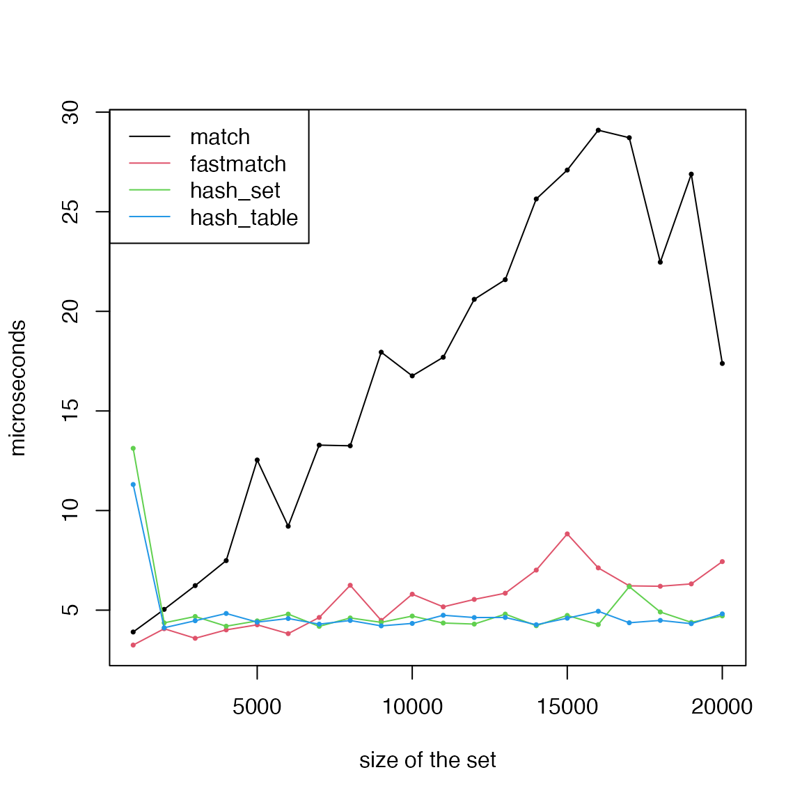
Obviously, hashtable is the fastest to create hash tables.
Query
Query a single key. Except hashmapR, all hash table
objects created by various methods support [[ index to get
a single value.
t1 = t2 = t3 = t4 = t5 = t6 = t7 = numeric(length(size))
for(i in seq_along(size)) {
keys = unique_strings(size[i])
values = seq_along(keys)
h1 = hash_table(keys = keys, values = values)
h2 = hash_fm_table(keys = keys, values = values)
h3 = hash_env_table(keys = keys, values = values)
lt = split(values, keys)
h4 = list2env(lt, hash = TRUE, parent = emptyenv())
h5 = hash::hash(keys = keys, values = values)
h6 = hashmapR::hashmap()
h6$set(split(keys, keys), split(values, keys), vectorize = TRUE)
h7 = r2r::hashmap()
h7[keys] = values
t1[i] = bm(h1[[sample(keys, 1)]])
t2[i] = bm(h2[[sample(keys, 1)]])
t3[i] = bm(h3[[sample(keys, 1)]])
t4[i] = bm(h4[[sample(keys, 1)]])
t5[i] = bm(h5[[sample(keys, 1)]])
t6[i] = bm(h6$get(sample(keys, 1)))
t7[i] = bm(h7[[sample(keys, 1)]])
}
matplot(size, cbind(t1, t2, t3, t4, t5, t6, t7)/1000, type = "o",
lty = 1, col = 1:7, pch = 16, cex = 0.5,
xlab = "size", ylab = "microseconds", main = "Query a single key")
legend("topleft", lty = 1, col = 1:7,
legend = c("hash_table", "hash_fm_table", "hash_env_table", "list2env", "hash", "hashmapR", "r2r"))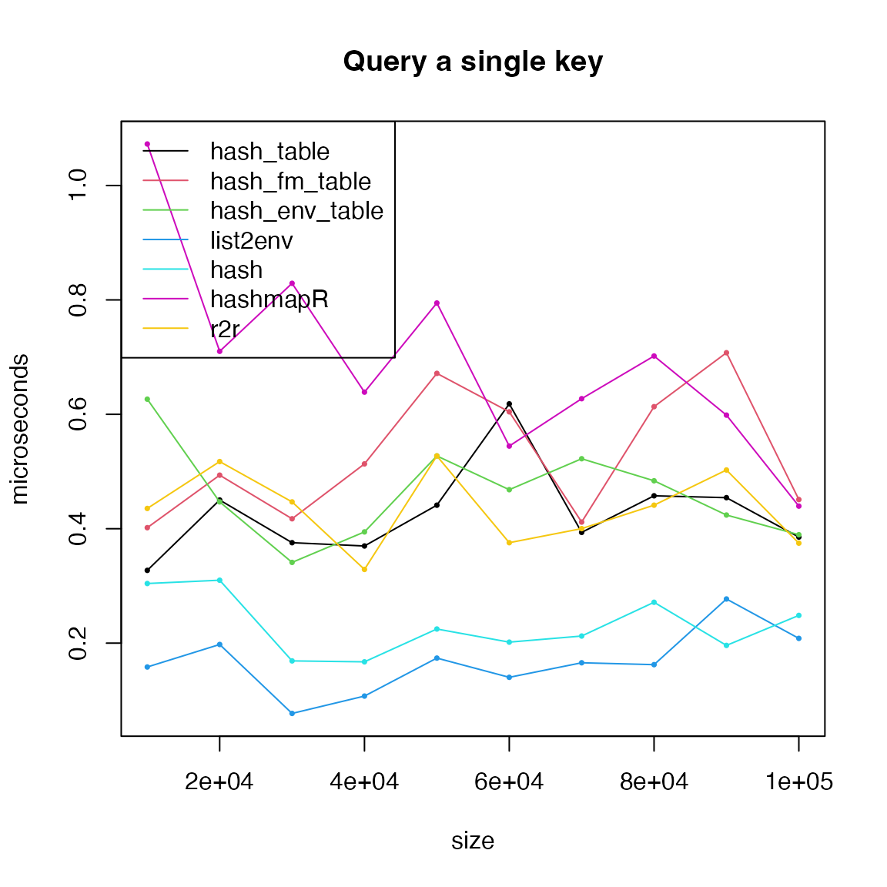
All hash-functions have similar performance. The small difference of runtime is due to their specific implementations, e.g., hashtable implements functions using S4, so it needs a little bit more steps on method dispatch.
Query multiple keys. We use mget() to get multiple
values from an environment. Many methods support [ index to
get multiple values.
par(mfrow = c(2, 2))
for(p in c(0.01, 0.1, 0.25, 0.5)) {
t1 = t2 = t3 = t4 = t5 = t6 = t7 = numeric(length(size))
for(i in seq_along(size)) {
keys = unique_strings(size[i])
values = seq_along(keys)
h1 = hash_table(keys = keys, values = values)
h2 = hash_fm_table(keys = keys, values = values)
h3 = hash_env_table(keys = keys, values = values)
lt = split(values, keys)
h4 = list2env(lt, hash = TRUE, parent = emptyenv())
h5 = hash::hash(keys = keys, values = values)
h6 = hashmapR::hashmap()
h6$set(split(keys, keys), split(values, keys), vectorize = TRUE)
h7 = r2r::hashmap()
h7[keys] = values
t1[i] = bm(h1[sample(keys, round(p*size[i]))])
t2[i] = bm(h2[sample(keys, round(p*size[i]))])
t3[i] = bm(h3[sample(keys, round(p*size[i]))])
t4[i] = bm(mget(sample(keys, round(p*size[i])), h4))
t5[i] = bm(h5[sample(keys, round(p*size[i]))])
t6[i] = bm(h6$get(sample(keys, round(p*size[i]))))
t7[i] = bm(h7[sample(keys, round(p*size[i]))])
}
matplot(size, cbind(t1, t2, t3, t4, t5, t6, t7)/1000, type = "o",
lty = 1, col = 1:6, pch = 16, cex = 0.5,
xlab = "size", ylab = "microseconds", main = paste0("Query multiple keys, ", p*100, "%"))
legend("topleft", lty = 1, col = 1:6,
legend = c("hash_table", "hash_fm_table", "hash_env_table", "list2env", "hash", "hashmapR", "r2r"))
}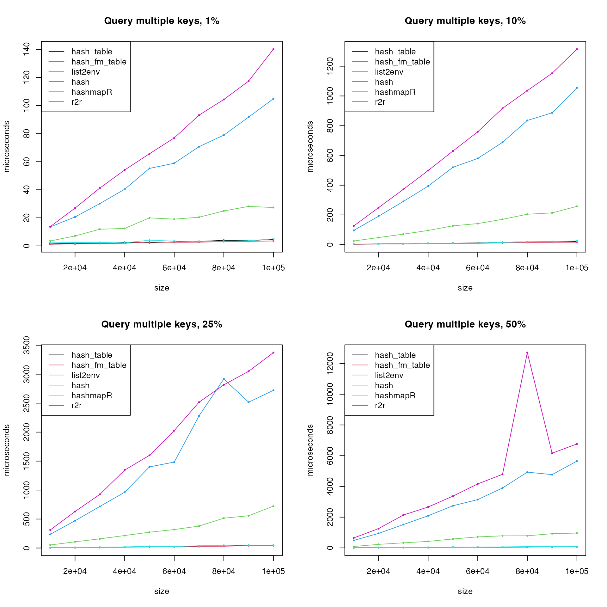
r2r and hash performs badly when
querying multiple keys. Remove r2r, hash()
also remove two environment-functions list2env() and
hash_env_table(), then remake the last plot:
matplot(size, cbind(t1, t2, t6)/1000, type = "o",
lty = 1, col = c(1:2, 6), pch = 16, cex = 0.5,
xlab = "size", ylab = "microseconds", main = paste0("Query multiple keys, ", p*100, "%"))
legend("topleft", lty = 1, col = c(1:2, 6),
legend = c("hash_table", "hash_fm_table", "hashmapR"))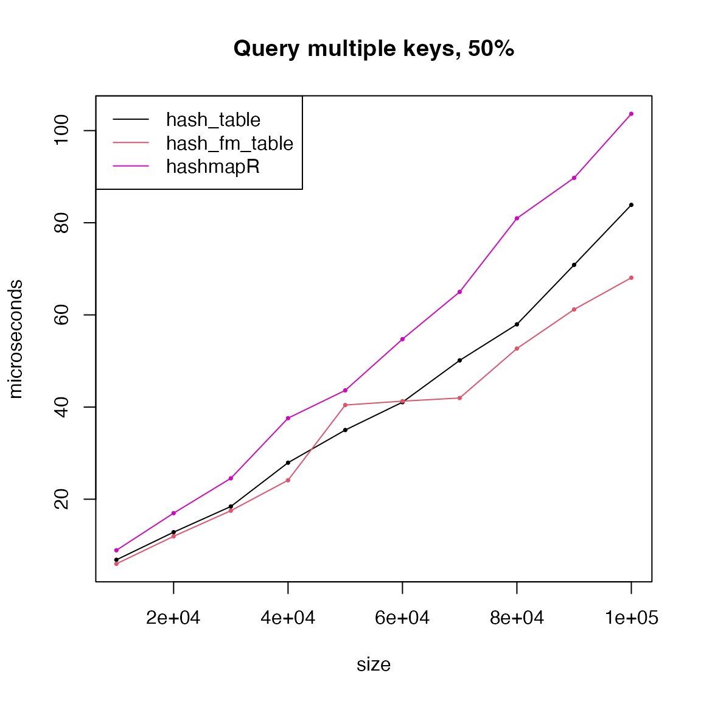
Insertion
Except hashmapR, all hash table objects created by
various methods support [[<- to set a single value. Note
hash_fm_table() is not incluced because it does not allow
to insert new keys.
Note unique_strings() is based on MD5 hashes of
integers, rnorm(1) generates nuemric values, so
digest(rnorm(1)) generate new keys.
t1 = t3 = t4 = t5 = t6 = t7 = numeric(length(size))
for(i in seq_along(size)) {
keys = unique_strings(size[i])
values = seq_along(keys)
h1 = hash_table(keys = keys, values = values)
h3 = hash_env_table(keys = keys, values = values)
lt = split(values, keys)
h4 = list2env(lt, hash = TRUE, parent = emptyenv())
h5 = hash::hash(keys = keys, values = values)
h6 = hashmapR::hashmap()
h6$set(split(keys, keys), split(values, keys), vectorize = TRUE)
h7 = r2r::hashmap()
h7[keys] = values
t1[i] = bm(h1[[digest(rnorm(1))]] <- 1L)
t3[i] = bm(h3[[digest(rnorm(1))]] <- 1L)
t4[i] = bm(h4[[digest(rnorm(1))]] <- 1L)
t5[i] = bm(h5[[digest(rnorm(1))]] <- 1L)
t6[i] = bm(h6$set(digest(rnorm(1)), 1L))
t7[i] = bm(h7[[digest(rnorm(1))]] <- 1L)
}
matplot(size, cbind(t1, t3, t4, t5, t6, t7)/1000, type = "o",
lty = 1, col = c(1, 3:7), pch = 16, cex = 0.5,
xlab = "size", ylab = "microseconds", main = "Insert a single key")
legend("topleft", lty = 1, col = c(1, 3:7),
legend = c("hash_table", "hash_env_table", "list2env", "hash", "hashmapR", "r2r"))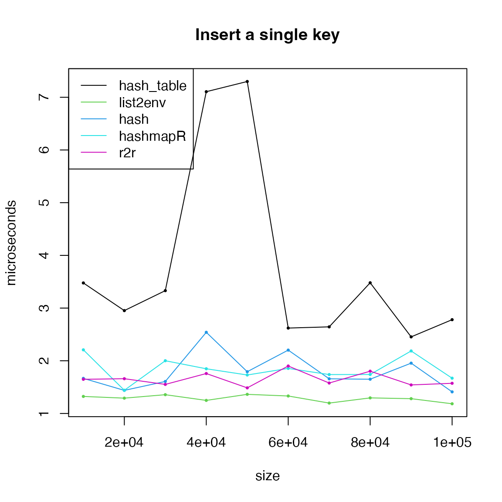
Deletion
Difference methods have different interfaces to delete key-value
pairs. hash_fm_table() is not incluced because it does not
allow to delete keys.
t1 = t3 = t4 = t5 = t6 = t7 = numeric(length(size))
for(i in seq_along(size)) {
keys = unique_strings(size[i])
values = seq_along(keys)
h1 = hash_table(keys = keys, values = values)
h3 = hash_env_table(keys = keys, values = values)
lt = split(values, keys)
h4 = list2env(lt, hash = TRUE, parent = emptyenv())
h5 = hash::hash(keys = keys, values = values)
h6 = hashmapR::hashmap()
h6$set(split(keys, keys), split(values, keys), vectorize = TRUE)
h7 = r2r::hashmap()
h7[keys] = values
t1[i] = bm(hash_delete(h1, sample(keys, 1)))
t3[i] = bm(hash_delete(h3, sample(keys, 1)))
t4[i] = bm(rm(list = sample(keys, 1), h4))
t5[i] = bm(hash::delete(sample(keys, 1), h5))
t6[i] = bm(h6$remove(sample(keys, 1)))
t7[i] = bm(r2r::delete(h7, sample(keys, 1)))
}
matplot(size, cbind(t1, t3, t4, t5, t6, t7)/1000, type = "o",
lty = 1, col = c(1, 3:7), pch = 16, cex = 0.5,
xlab = "size", ylab = "microseconds", main = "Delete a single key")
legend("left", lty = 1, col = c(1, 3:7),
legend = c("hash_table", "hash_env_table", "list2env", "hash", "hashmapR", "r2r"))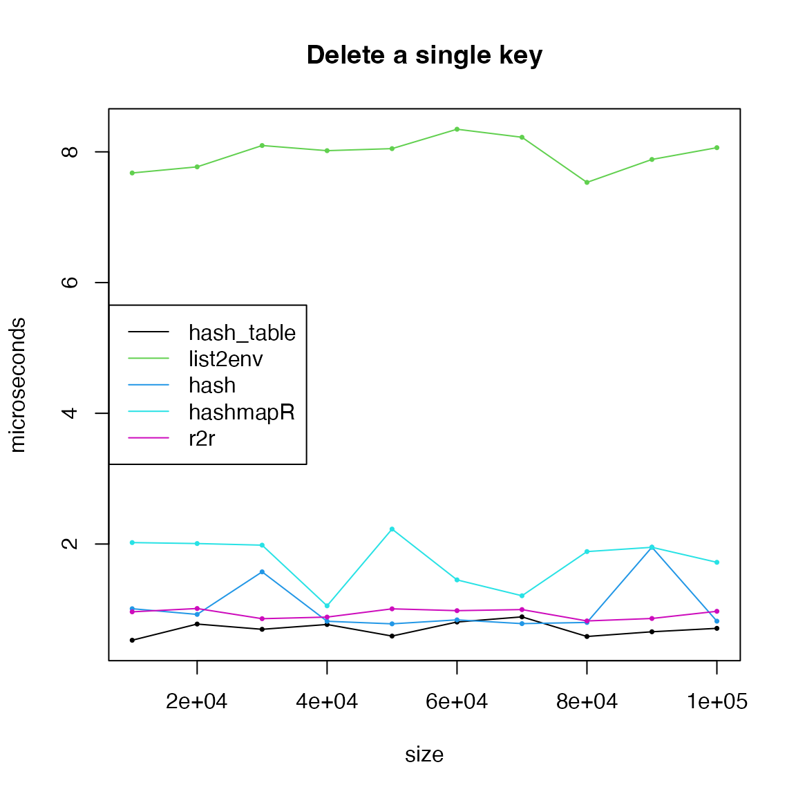
list2env() performs obviously bad.
Compare to match-family functions
People may think named vectors (including lists) behave like hashes.
vec = c("foo" = 1, "bar" = 2)
vec## foo bar
## 1 2
vec[["foo"]]## [1] 1
lt = list("foo" = 1, "bar" = "text")
lt$foo## [1] 1Actually they are not. Names are just normal character vectors, but attached to the object as an attributes.
attributes(vec)## $names
## [1] "foo" "bar"
attributes(lt)## $names
## [1] "foo" "bar"So using names as indices basically does matching in the “names” attributes.
There are following match-family functions:
-
pmatch(), used innames(),$,[[,[, -
match(), used in%in%,intersect(),unique(),duplicated(), -
fastmatch::fastmatch(), a faster version ofmatch(), synonyms functions arefmatch()and%fin%, -
data.table::chmatch(), also a faster version ofmatch(), synonyms functions arechmatch()and%chin%.
pmatch() means partial matching. It matches elements if
substrings can be uniquely mapped.
In hashtable, the function
hash_fm_table() is internally implemented with
fastmatch::fastmatch(), but providing a more convenient
interface.
library(fastmatch)
library(data.table)
t1 = t2 = t3 = t4 = t5 = t6 = t7 = t8 = numeric(length(size))
for(i in seq_along(size)) {
keys = unique_strings(size[i])
values = seq_along(keys)
x = structure(values, names = keys)
h1 = hash_table(keys = keys, values = values)
h2 = hash_fm_table(keys = keys, values = values)
h3 = hash_env_table(keys = keys, values = values)
t1[i] = bm(h1[[sample(keys, 1)]])
t2[i] = bm(h2[[sample(keys, 1)]])
h6 = hashmapR::hashmap()
h6$set(split(keys, keys), split(values, keys), vectorize = TRUE)
t6[i] = bm(h6$get(sample(keys, 1)))
t4[i] = bm(x[[sample(keys, 1)]])
t5[i] = bm(x[[match(sample(keys, 1), keys)]])
t7[i] = bm(x[[fmatch(sample(keys, 1), keys)]])
t8[i] = bm(x[[chmatch(sample(keys, 1), keys)]])
}
matplot(size, cbind(t1, t2, t3, t6, t4, t5, t7, t8)/1000, type = "o",
lty = 1, col = c(1:3, 6, 4, 5, 7, 8), pch = 16, cex = 0.5,
xlab = "size", ylab = "microseconds", main = "Query a single key, match-family")
legend("topleft", lty = 1, col = c(1:3, 6, 4, 5, 7, 8),
legend = c("hash_table", "hash_fm_table", "hash_env_table", "hashmapR", "pmatch/names", "match", "fmatch", "chmatch"))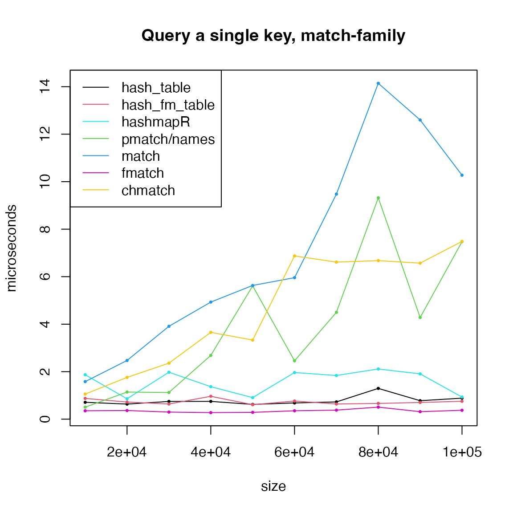
We can see hash-family functions have time complexity of
,
pmatch(), match() and chmatch()
have
.
Next query multiple keys with match-family functions.
par(mfrow = c(2, 2))
for(p in c(0.01, 0.1, 0.25, 0.5)) {
t1 = t2 = t3 = t4 = t5 = t6 = t7 = numeric(length(size))
for(i in seq_along(size)) {
keys = unique_strings(size[i])
values = seq_along(keys)
x = structure(values, names = keys)
h1 = hash_table(keys = keys, values = values)
h2 = hash_fm_table(keys = keys, values = values)
h3 = hash_env_table(keys = keys, values = values)
t1[i] = bm(h1[sample(keys, round(p*size[i]))])
t2[i] = bm(h2[sample(keys, round(p*size[i]))])
t3[i] = bm(h3[sample(keys, round(p*size[i]))])
h6 = hashmapR::hashmap()
h6$set(split(keys, keys), split(values, keys), vectorize = TRUE)
t6[i] = bm(h6$get(sample(keys, round(p*size[i]))))
t4[i] = bm(x[sample(keys, round(p*size[i]))])
t5[i] = bm(x[match(sample(keys, round(p*size[i])), keys)])
t7[i] = bm(x[fmatch(sample(keys, round(p*size[i])), keys)])
t8[i] = bm(x[chmatch(sample(keys, round(p*size[i])), keys)])
}
matplot(size, cbind(t1, t2, t3, t6, t4, t5, t7, t8)/1000, type = "o",
lty = 1, col = c(1:3, 6, 4, 5, 7, 8), pch = 16, cex = 0.5,
xlab = "size", ylab = "microseconds", main = paste0("Query multiple keys, match-family, ", p*100, "%"))
legend("topleft", lty = 1, col = c(1:3, 6, 4, 5, 7, 8),
legend = c("hash_table", "hash_fm_table", "hash_env_table", "hashmapR", "names/pmatch", "match", "fmatch", "chmatch"))
}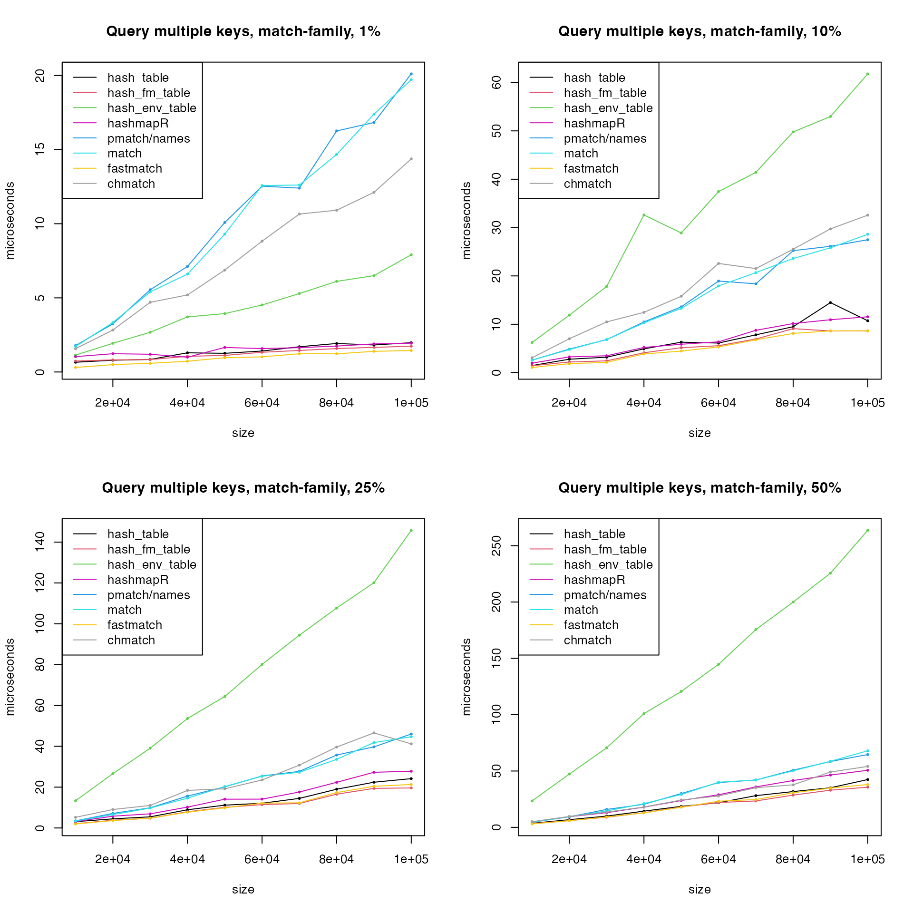
Remove hash_env_table() and remake the last plot.new
matplot(size, cbind(t1, t2, t6, t4, t5, t7, t8)/1000, type = "o",
lty = 1, col = c(1:3, 6, 4, 5, 7, 8), pch = 16, cex = 0.5,
xlab = "size", ylab = "microseconds", main = paste0("Query multiple keys, match-family, ", p*100, "%"))
legend("topleft", lty = 1, col = c(1:3, 6, 4, 5, 7, 8),
legend = c("hash_table", "hash_fm_table", "hashmapR", "names/pmatch", "match", "fmatch", "chmatch"))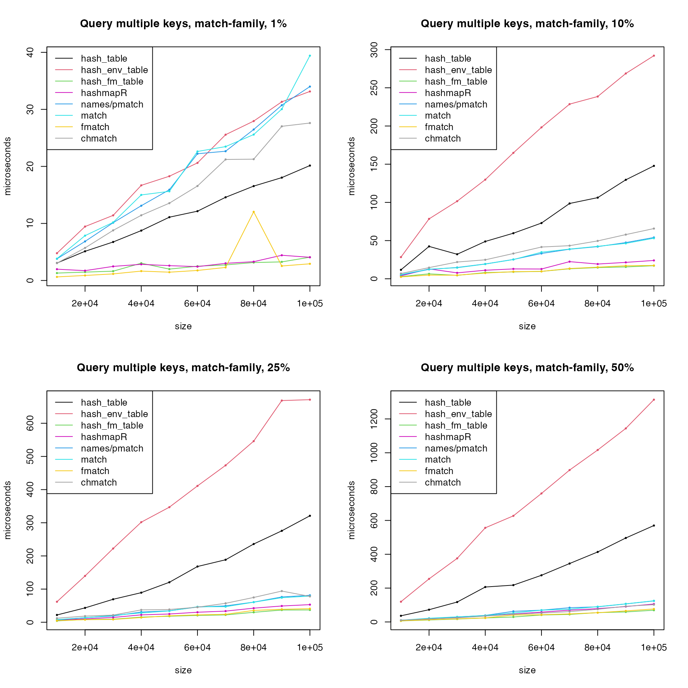
Hash set
Hash set is basically very similar as hash table. The only difference is for hash table, there are values associated with keys, while for hash set, there are only keys.
We first test querying a single key, which is to test whether the key exists in the hash set.
t1 = t2 = t3 = t4 = t5 = t6 = t7 = numeric(length(size))
for(i in seq_along(size)) {
keys = unique_strings(size[i])
h1 = hash_set(keys)
h2 = hash_fm_set(keys)
h3 = hash_env_set(keys)
h7 = r2r::hashset(keys)
t1[i] = bm(h1[[sample(keys, 1)]])
t2[i] = bm(h2[[sample(keys, 1)]])
t3[i] = bm(h3[[sample(keys, 1)]])
t7[i] = bm(h7[[sample(keys, 1)]])
t4[i] = bm(match(sample(keys, 1), keys))
t5[i] = bm(fmatch(sample(keys, 1), keys))
t6[i] = bm(chmatch(sample(keys, 1), keys))
}
matplot(size, cbind(t1, t2, t3, t7, t4, t5, t6)/1000, type = "o",
lty = 1, col = c(1:3, 7, 4:6), pch = 16, cex = 0.5,
xlab = "size", ylab = "microseconds", main = "Query a single key")
legend("topleft", lty = 1, col = c(1:3, 7, 4:6),
legend = c("hash_set", "hash_fm_set", "hash_env_set", "r2r", "match", "fastmatch", "chmatch"))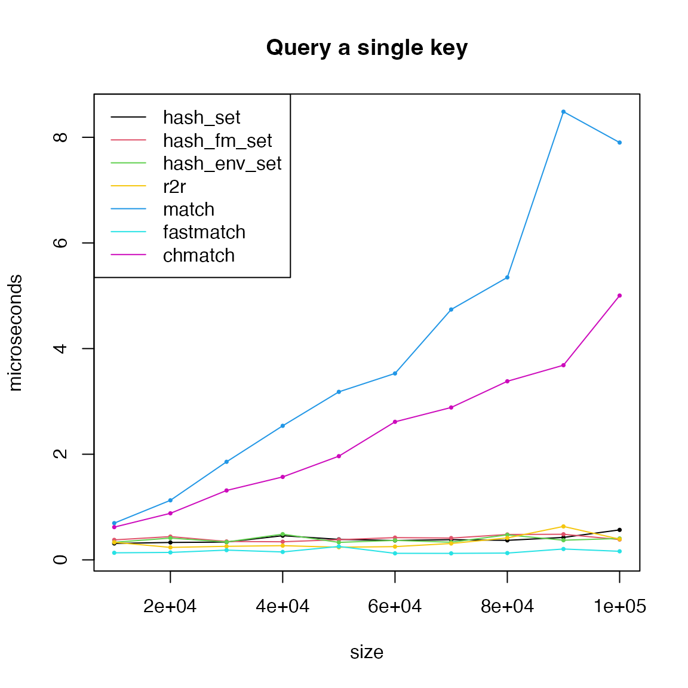
match() and chmatch() are not
hash-functions. We remove them and remake the last plot.
matplot(size, cbind(t1, t2, t3, t7, t5)/1000, type = "o",
lty = 1, col = c(1:3, 7, 5), pch = 16, cex = 0.5,
xlab = "size", ylab = "microseconds", main = "Query a single key")
legend("topleft", lty = 1, col = c(1:3, 7, 5),
legend = c("hash_set", "hash_fm_set", "hash_env_set", "r2r", "fastmatch"))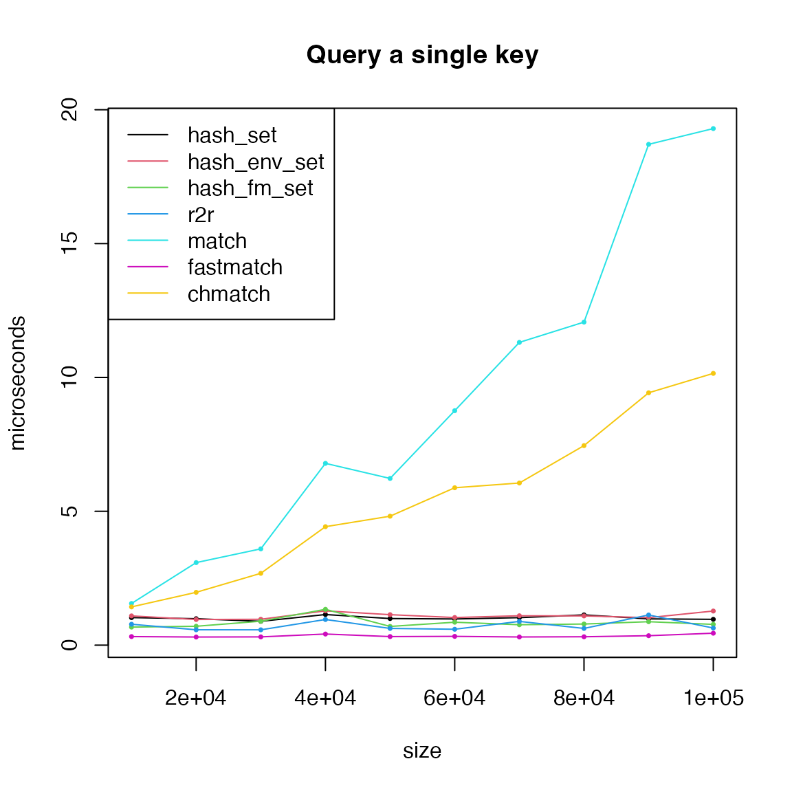
Next query multiple keys.
par(mfrow = c(2, 2))
for(p in c(0.01, 0.1, 0.25, 0.5)) {
t1 = t2 = t3 = t4 = t5 = t6 = t7 = numeric(length(size))
for(i in seq_along(size)) {
keys = unique_strings(size[i])
h1 = hash_set(keys)
h2 = hash_fm_set(keys)
h3 = hash_env_set(keys)
h7 = r2r::hashset(keys)
t1[i] = bm(h1[sample(keys, round(p*size[i]))])
t2[i] = bm(h2[sample(keys, round(p*size[i]))])
t3[i] = bm(h3[sample(keys, round(p*size[i]))])
t7[i] = bm(h7[sample(keys, round(p*size[i]))])
t4[i] = bm(match(sample(keys, round(p*size[i])), keys))
t5[i] = bm(fmatch(sample(keys, round(p*size[i])), keys))
t6[i] = bm(chmatch(sample(keys, round(p*size[i])), keys))
}
matplot(size, cbind(t1, t2, t3, t7, t4, t5, t6)/1000, type = "o",
lty = 1, col = c(1:3, 7, 4:5), pch = 16, cex = 0.5,
xlab = "size", ylab = "microseconds", main = paste0("Query multiple keys, ", p*100, "%"))
legend("topleft", lty = 1, col = c(1:3, 7, 4:6),
legend = c("hash_set", "hash_fm_set", "hash_env_set", "r2r", "match", "fastmatch", "chmatch"))
}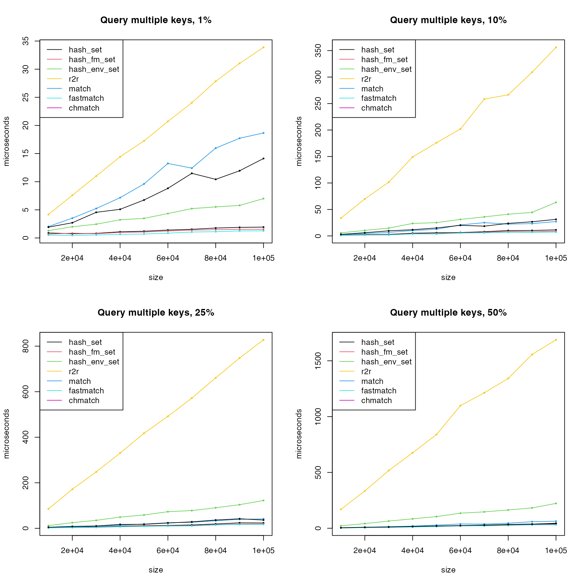
Obviously r2r has very bad performance when querying
multiple keys. Remove r2r also hash_env_set()
and remake the last plot.
matplot(size, cbind(t1, t2, t4, t5, t6)/1000, type = "o",
lty = 1, col = c(1:2, 4:6), pch = 16, cex = 0.5,
xlab = "size", ylab = "microseconds", main = paste0("Query multiple keys, ", p*100, "%"))
legend("topleft", lty = 1, col = c(1:2, 4:6),
legend = c("hash_set", "hash_fm_set", "match", "fastmatch", "chmatch"))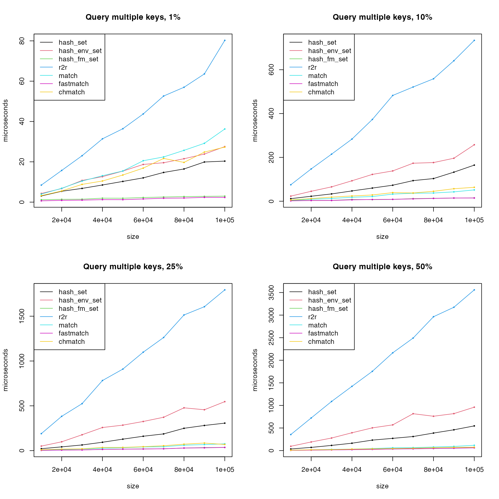
Compare hash tables and hash sets
In hashtable, hash tables and hash sets are implements similarly in the three implementations.
t1 = t2 = t3 = t4 = t5 = t6 = numeric(length(size))
for(i in seq_along(size)) {
keys = unique_strings(size[i])
values = seq_len(size[i])
h1 = hash_table(keys = keys, values = values)
h2 = hash_fm_table(keys = keys, values = values)
h3 = hash_env_table(keys = keys, values = values)
h4 = hash_set(keys = keys)
h5 = hash_fm_set(keys = keys)
h6 = hash_env_set(keys = keys)
p = 0.1
t1[i] = bm(h1[sample(keys, round(p*size[i]))])
t2[i] = bm(h2[sample(keys, round(p*size[i]))])
t3[i] = bm(h3[sample(keys, round(p*size[i]))])
t4[i] = bm(h4[sample(keys, round(p*size[i]))])
t5[i] = bm(h5[sample(keys, round(p*size[i]))])
t6[i] = bm(h6[sample(keys, round(p*size[i]))])
}
matplot(size, cbind(t1, t2, t3, t4, t5, t6)/1000, type = "o",
lty = c(1, 1, 1, 2, 2, 2), col = c(1, 2, 3, 1, 2, 3), pch = 16, cex = 0.5,
xlab = "size", ylab = "microseconds", main = "Query multiple keys")
legend("topleft", lty = c(1, 1, 1, 2, 2, 2), col = c(1, 2, 3, 1, 2, 3),
legend = c("hash_table", "hash_fm_table", "hash_env_table", "hash_set", "hash_fm_set", "hash_env_set"))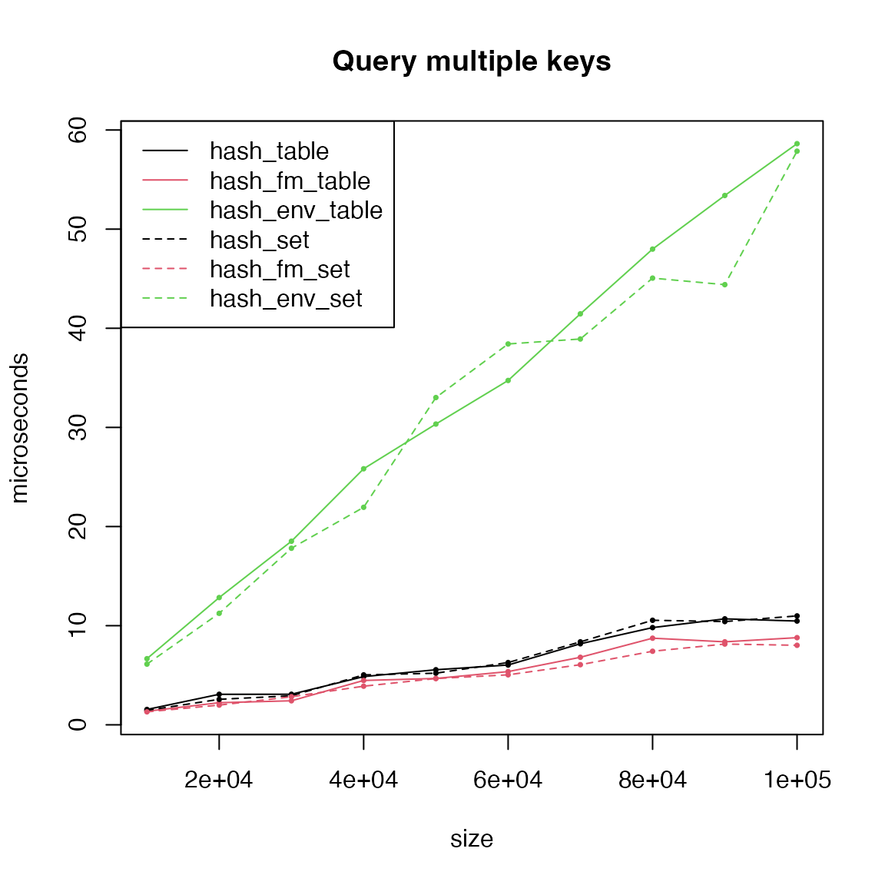
Summarize
For creating hash tables, hashtable is fast.
For querying single keys, all hash-functions are fast, but the
runtime of pmatch(), match() and
chmatch() increases linearly to the size of the data.
For querying multiple keys, hash_fm_set() and
fmatch() is the fastest. If hash tables are changable, then
hash_table() and hashmapR can be
considered as replacement.
For inserting new keys, all hash-functions are similar.
For deleting keys, list2env() (which uses
rm()) is relatively slow, other functions are similar.
## R version 4.6.0 (2026-04-24)
## Platform: aarch64-apple-darwin23
## Running under: macOS Tahoe 26.5.1
##
## Matrix products: default
## BLAS: /Library/Frameworks/R.framework/Versions/4.6/Resources/lib/libRblas.0.dylib
## LAPACK: /Library/Frameworks/R.framework/Versions/4.6/Resources/lib/libRlapack.dylib; LAPACK version 3.12.1
##
## locale:
## [1] en_GB.UTF-8/en_GB.UTF-8/en_GB.UTF-8/C/en_GB.UTF-8/en_GB.UTF-8
##
## time zone: Asia/Shanghai
## tzcode source: internal
##
## attached base packages:
## [1] stats graphics grDevices utils datasets methods base
##
## other attached packages:
## [1] data.table_1.18.4 fastmatch_1.1-8 digest_0.6.39
## [4] microbenchmark_1.5.0 hashtable_1.0.0 knitr_1.51
##
## loaded via a namespace (and not attached):
## [1] cli_3.6.6 rlang_1.2.0 xfun_0.59 otel_0.2.0
## [5] textshaping_1.0.5 jsonlite_2.0.0 hash_2.2.6.4 htmltools_0.5.9
## [9] ragg_1.5.2 sass_0.4.10 rmarkdown_2.31 evaluate_1.0.5
## [13] jquerylib_0.1.4 fastmap_1.2.0 yaml_2.3.12 lifecycle_1.0.5
## [17] hashmapR_1.0.1 compiler_4.6.0 fs_2.1.0 htmlwidgets_1.6.4
## [21] Rcpp_1.1.1-1.1 systemfonts_1.3.2 R6_2.6.1 bslib_0.11.0
## [25] tools_4.6.0 r2r_0.1.2 pkgdown_2.2.0 cachem_1.1.0
## [29] desc_1.4.3